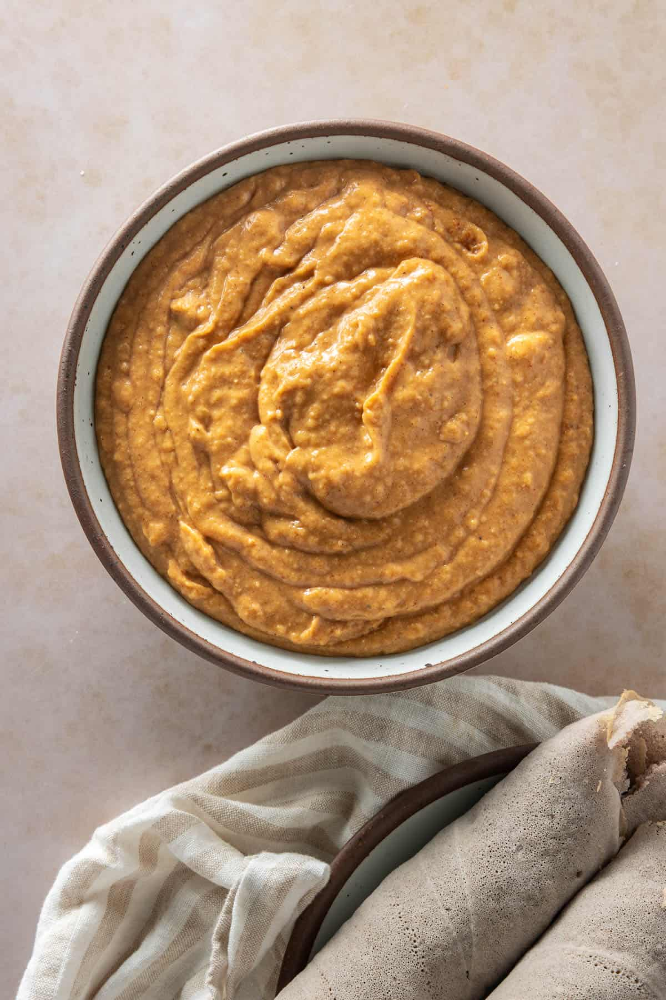
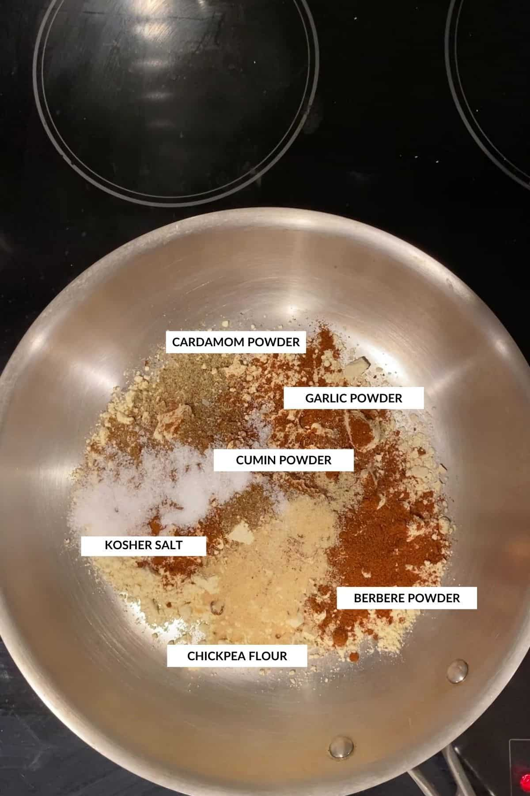

Shiro-Wat

⭐ Origin Story
You'd have seen a note about this in some of my other Ethiopian recipes (like with this Atakilt Wat) Ethiopia
(and Eritrea) have a large population of orthodox Christians, who fast (and cut out meat) for portions of the
year. As a result, many Ethiopian meals have delicious vegan dishes that we can now thankfully enjoy.
I learned the base for this recipe when I worked in Addis Ababa, the capital of Ethiopia. I then adapted the
recipe based on suggestions from a good (Ethiopian) friend's mother so you can make this easily in the US.
Serves: 5 as a main course on its own, or up to 15 if served with other dishes, Ethiopian style
ingredients
to make shiro powder
- chickpea flour
- berbere powder
- garlic powder
- ground cardamom
- cumin powder.
For the rest you'll need
- olive oil
- onions
- tomato paste
- minced garlic
- and salt. Easy, peasy!
steps
Start by making shiro powder.

-
Dry toast chickpea flour in a large skillet over medium heat, stirring constantly, until fragrant and slightly
browned, about 5 minutes.
-
Add berbere spice, ground cardamom, cumin powder, and garlic powder. Stir to combine and toast for an additional
minute.
- Set aside. You can either add the salt here, or later
making the shiro
- Heat a medium sized pot (or Dutch oven) on medium heat.
- Add olive oil and heat it up for a minute.
- Add a diced onion, and sauté over low to medium heat for a few minutes until fragrant.
- The smaller you can dice your onions the better. Alternatively, you can also puree the onions and add that instead!
- Add minced garlic along with tomato paste and sauté for a minute until garlic is fragrant.
- Add the shiro powder, salt, and three cups of water to the pot.
- Bring this to a boil on medium heat.
- Turn the heat down and let the mixture simmer for 20 or 30 minutes, depending on the strength of your stove and the consistency you prefer.
- Make sure to stir at five minute increments, so it doesn't stick.
pro tip!:the olive oil will float to the top when the shiro is done cooking!
Serve hot with rice or injera